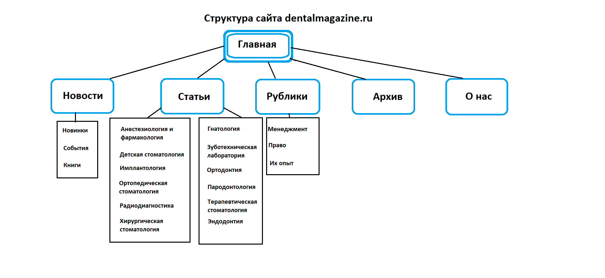
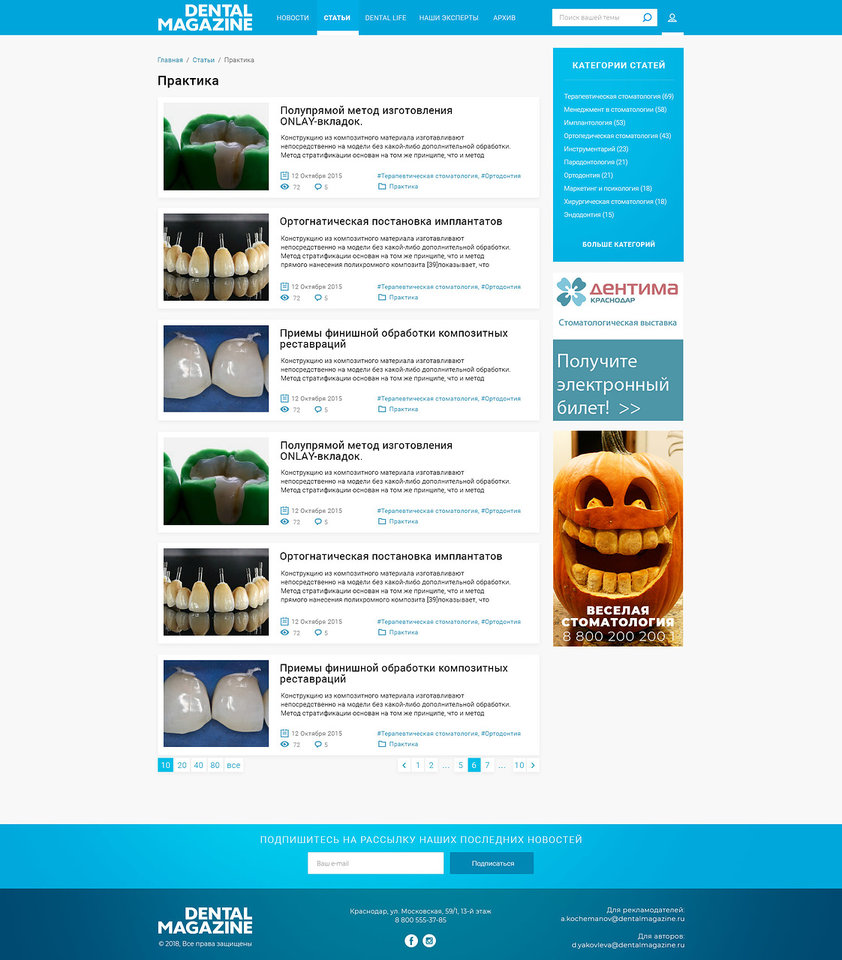
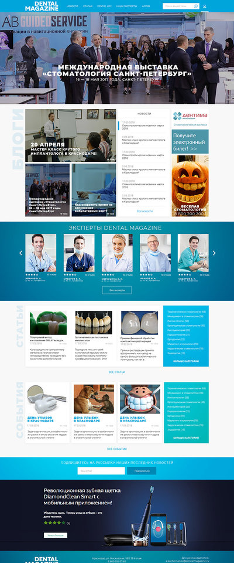
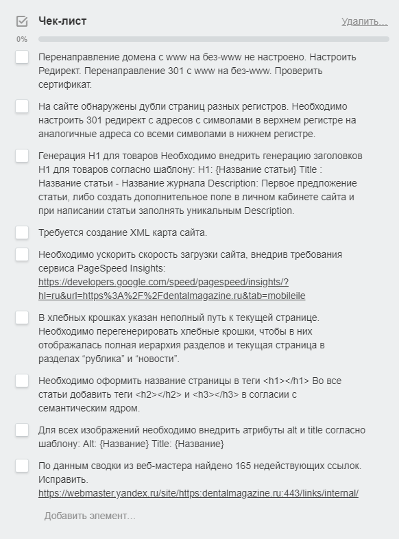
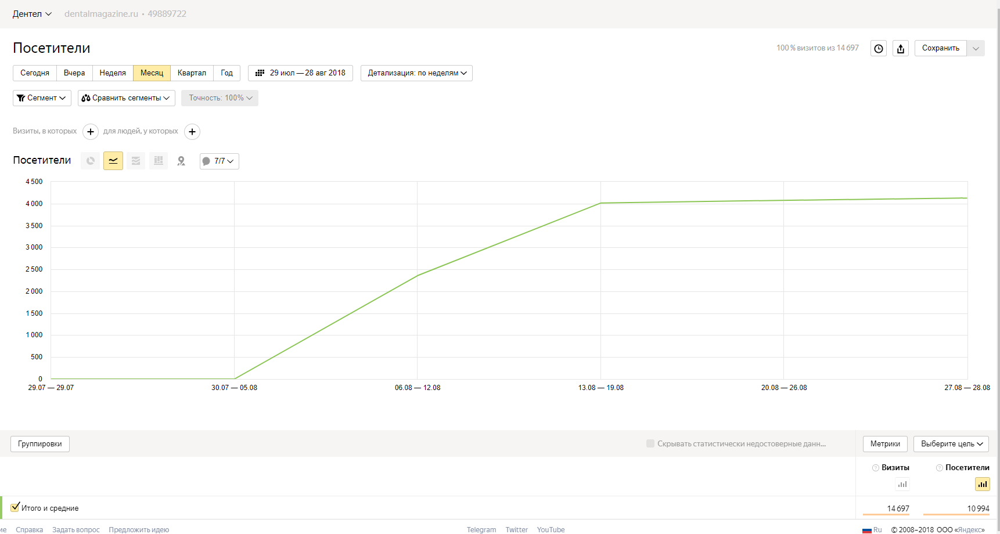

Профессиональный стоматологический интернет-журнал Dental Magazine создан для труда и отдыха специалистов стоматологического профиля не только на территории Российской Федерации, но и за рубежом. История журнала началась ещё в далеком 2000 году.
02
Этап 1. Выявление целей.
Свою работу над проектом мы начали с небольшого брифа, где клиент указывал информацию по своим предпочтениям. Были указаны данные от дизайна, задач и целей SEO-продвижения.
На основе брифа мы строим план работ над каждым новым проектом, поскольку для нас он является таким же документом, как и договор об оказании услуг.
После получения брифа наша команда уточнила детали:
Сайт изначально был задуман как продолжение печатной версии уже издаваемого журнала. Он выпускался для стоматологов.
Клиент уже имел контент для наполнения сайта, который отвечал 3 критериям: профессиональности, эксклюзивности и уникальности.
В компании имеется редактор, который будет заниматься наполнением созданного ресурса.
Журнал выпускался по всей стране, но имел головной офис в Краснодаре. Данный регион был принят за основной.
Поскольку журнал был посвящен теме - стоматологии, было принято не расширять аудиторию и подниматься в топе в уже известной нише.
Клиент не имел представления о том, какой конечный результат он хочет. Мы предложили ему создать сайт на движке WordPress и разработали собственный уникальный шаблон на CSS Framework UIKit 2.0
03
Этап 2. Создание структуры сайта.
Для начала, мы создали структуру будущего сайта. Изучили главные запросы по тематике конкурентов и анализ конкурентов входящих в ТОП-10.
Исходя из результатов анализа, пожеланий клиента и имеющегося у него материала, мы создали структуру сайта:

04
Этап 3. Контент-план
Контент-план — это один из самых трудоемких процессов и самый длительный этап в создании сайта.
Чем более эксклюзивным материалом будет наполнен сайт, тем проще будет происходить работа в сфере продвижения его в поиске. Для создания сайта, следует создать контент-план сразу после структуры, а завершить после верстки - в целом это занимает около 2-3 месяцев.
Наш процесс был разбит на этапы:
Подготовка самого плана в соответствии с SEO-структурой;
Проверка материалов, которые подготовил Заказчик;
Проверка изображений;
Внесения контента в систему управления сайта.
05
Этап 4. Прототип
Заказчик сам не имел представления о том, каким он хочет видеть свой сайт. Более развернутая картина помогла нам найти оптимальный вариант и определится в отрисовке и верстке страниц.
Исходя из SEO-структуры были созданы главные страницы.
Дизайнер создал подробный прототип, что позволило заказчику увидеть будущие страницы сайта в режиме «демо-версии».
После просмотра были оговорены правки в первоначальный вариант сайта. Заказчик изменил наш прототип всего в нескольких незначительных деталях.
Этап 5. Dentalmagazine
Наша команда приступила к разработке дизайна. Дизайнеры учитывали логику навигации, которая была создана на прототипе. Выбрали стиль, цветовую гамму, изображения и шрифт. Главной задачей, было создание интуитивно понятного сайта – простота и легкость в понимании, вот наше кредо!

Человек, который попадает на сайт, должен оценить дизайн, не режущий глаза, но определенно привлекающий внимание. Информация на сложную тему должна была быть подана в спокойной цветовой гамме для лучшего понимания.
Созданием дизайн-концепции занимался арт-директор, а после свои правки вносил дизайнер. На совместную работу ушло 7 дней. Клиент внес свои правки в дизайн. Мы приступили к отрисовке деталей.

Верстка, программирование и внедрение в CMS
После создания и утверждения макета, мы перешли к технической части работы, которая заключалась в:
Адаптивной верстки с применением технологии flexbox.
Разработке кастомизированных плагинов для отображения баннеров, их ротации по приоритету, времени и страницам показа.
Использование реактивного поведения элементов на сайте посредством технологии VueJS.
Применение системы полнотекстового поиска Sphinx для увеличения скорости и результативности пользовательского поиска.
Постановка сайта на движок WordPress.
По окончанию данных работ мы получили уже готовый сайт, но пока без контента.
Наполнение сайта
Сайт мы наполняли материалом, который предоставил заказчик. По сути, мы перенесли на новый сайт информацию со старого.
06
Этап 6. Тесты
При тестировании сайта мы проверяем качество выполнения всех промежуточных этапов работ, таких как:
Юзабилити;
Быстроту сайта;
Корректность работы сайта в разных браузерах;
Корректность отображения на разных устройствах;
HTML-верстку.
После чего готовый проект был передан клиенту, для проведения собственных тестов. Получив одобрение, мы опубликовали наш ресурс на хостинге и открыли доступ для посетителей.
07
Этап 7. Последний рывок
После публикации сайт вернулся к SEO-шникам, которыми был проведен аудит и выставлены цели:

SEO-специалисты проделали следующий ряд работ:
Создали семантическое ядро;
Скорректировали структуру;
Создали мета-теги;
Провели полное аудирование;
Написали рекомендации;
Создали список новых статей для наполнения сайта;
Устранили дубли;
Проверили проверку индексации и корректности работы сайта.

В результате за месяц работы, наш сайт посетило более, чем 10 000 человек. Это говорит о том, что через месяц сайт может собрать более чем 30 000 человек.
08
Заключение
Наша команда проделала трудоемкую работу, в результате которой посетители сайта dentalmagazine.ru видят: